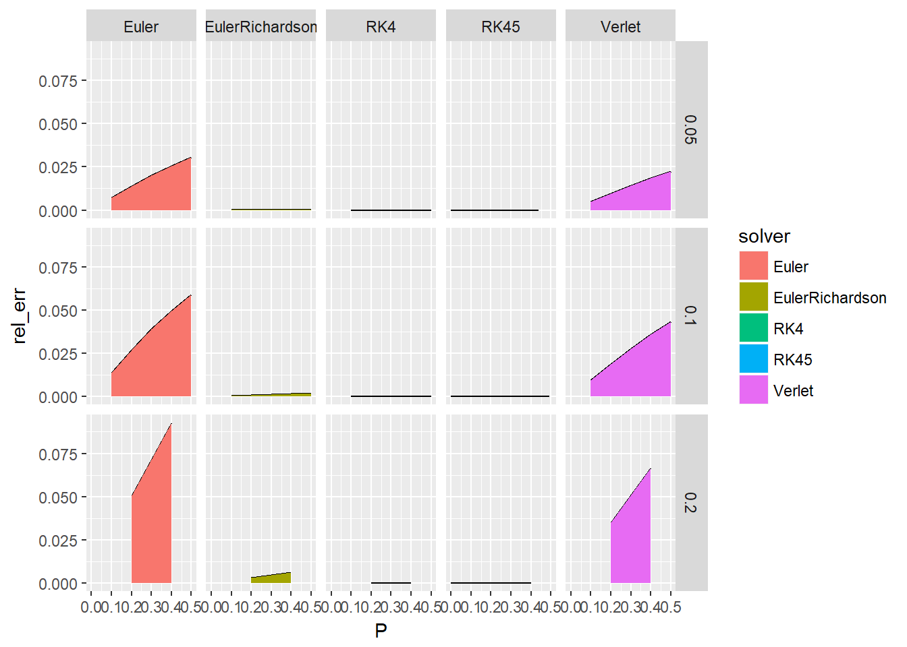
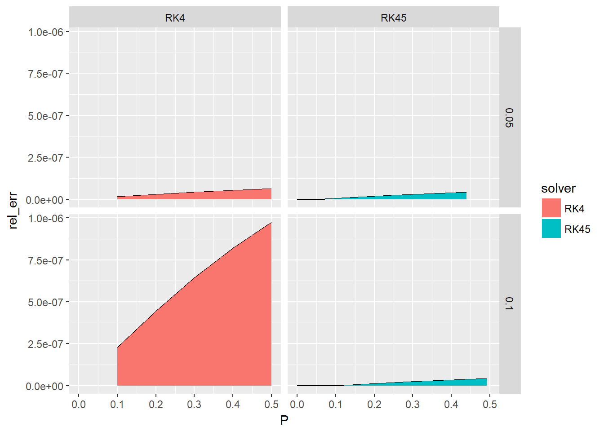

Muskat Material Balance
Alfonso R. Reyes
2017-11-10
Muskat’s Material Balance Equation
For the Muskat’s Material Balance equation:
\[\newcommand{\numD}{{\dfrac {S_o}{B_o B_g} \dfrac {dR_s}{dP} + \dfrac {S_o}{B_o} \dfrac {k_g}{k_o} \dfrac {\mu_o}{\mu_g} \dfrac {dB_o}{dP} + (1 - S_o - S_w) \dfrac {1}{B_g} \dfrac {dB_g}{dP} }}\]
\[\dfrac {dS_o}{dP} = \dfrac {\numD} {1 + \dfrac {k_g}{k_o} \dfrac {\mu_o}{\mu_g} }\]
All the terms on the right side are function of pressure (\(P\)) and saturation (\(S\)), the equation could be reduced to:
\[ \dfrac{dS}{dP} = f(P, S)\]
A first-order ordinary diferential equation (ODE) with the general analytical solution:
\[y(x) = C_1e^x-2x-2\]
Solving the 1st Order Differential Equation (ODE)
Given the following ODE that represents a particular reservoir: \[ \dfrac{dS}{dP} = (2P + S)\]
We wish to find the first saturation values if the initial conditions are:
\(P_o\) = 0, and \(S_o\) = 1.
The analytical solution for the differential equation, given the initial conditions, is: \[S(P) = 3e^P-2P-2\] ## Building the ODE for Material Balance Since we know the analytical solution, we will add a method getExactSolution to return the exact values at any given P. Then we will compare the exact solution versus the numerical solutions from the available ODE solvers in rODE.
# the ODE object
library(rODE)
library(ggplot2)
# class declaration
setClass("MuskatODE", slots = c(
stack = "environment" # environment object inside the class
),
contains = c("ODE")
)
# Initialization method
setMethod("initialize", "MuskatODE", function(.Object, ...) {
.Object@stack$n <- 0
return(.Object)
})
# The exact solution method
setMethod("getExactSolution", "MuskatODE", function(object, t, ...) {
# analytical solution
return(3 * exp(t) - 2 *t - 2) # constant C1 = 3
})
# obtain the state of the ODE
setMethod("getState", "MuskatODE", function(object, ...) {
object@state # return the state
})
# the differential equation is entered here.
setMethod("getRate", "MuskatODE", function(object, state, ...) {
object@rate[1] <- state[1] + 2 * state[2] # 2P + S
object@rate[2] <- 1 # dP/dP
object@stack$n <- object@stack$n + 1 # add 1 to the rate count
object@rate # return the rate
})
# constructor
MuskatODE <- function(P, S) {
.MuskatEuler <- new("MuskatODE")
.MuskatEuler@state[1] = S # S state[1] is saturation
.MuskatEuler@state[2] = P # P = t state[2] is pressure
return(.MuskatEuler)
}## [1] "initialize"
## [1] "getExactSolution"
## [1] "getState"
## [1] "getRate"Implementing the Euler solver
After we define the differential equation in shape of code, or ODE object, we move to build the iterative routine for the differential equation. We start with the given initial conditions, \(P =0\), and \(S=1\), stopping the iterations at \(P = 0.5\).
Since we don’t know the size of the infinitesimal step \(\Delta P\) to use in the solver, we are given three different step sizes 0.2, 0.1, 0.05. Depending of the accuracy of the solution, at the end a satisfactory step size will be selected.
As we go calculating the numerical solution with the Euler method, we are also getting the exact result from the analytical solution \(S(P) = 3e^P-2P-2\), using both to find the error and the relative error. The number of steps that the ODE solver takes is also recorded.
# application that uses the Muskat ODE solver above
MuskatEulerApp <- function(stepSize) {
ode <- MuskatODE(0, 1) # initial state S(0) = 1; P = 0
ode_solver <- Euler(ode) # use the Euler ODE solver
ode_solver <- setStepSize(ode_solver, stepSize)
rowVector <- vector("list") # calculation will be added to rowVector
pres <- 0 # P = 0
i <- 1 # index of the iterations
while (pres < 0.5) {
state <- getState(ode_solver@ode)
pres <- state[2]
error <- getExactSolution(ode_solver@ode, pres) - state[1]
rowVector[[i]] <- list(step_size = stepSize, # vector with calculations
P = pres,
S = state[1],
exact = getExactSolution(ode_solver@ode, pres),
error = error,
rel_err = error / getExactSolution(ode_solver@ode, pres),
steps = ode_solver@ode@stack$n
)
ode_solver <- step(ode_solver) # advance solver one step
i <- i + 1 # advance iteration
}
data.table::rbindlist(rowVector) # results in data table
}Summary table
After the iteration model is completed, it is time to analyze the results stored in the table. We do this by sending the three step sizes for \(\Delta P\) using the function lapply. Since we don’t want to see all the intermediate steps, we will limit the result table to display only the solutions at \(P\) equal 0.10, 0.20, 0.30, 0.40, 0.5.
The table has these columns or variables:
-
step_size: size of the step for the solver. -
P: pressure -
S: saturation -
exact: exact value from the analytical solution -
error: difference between the analytical solution and the numerical solution -
rel_err: relative error -
steps: number of steps taken by the solver
# get a summary table for different step sizes
get_table <- function(stepSize) {
dt <- MuskatEulerApp(stepSize)
dt[round(P, 2) %in% c(0.10, 0.20, 0.30, 0.40, 0.5)]
}
# vector with some step sizes
step_sizes <- c(0.2, 0.1, 0.05)
dt_li <- lapply(step_sizes, get_table) # create a data table
data.table::rbindlist(dt_li) # bind the data tables## step_size P S exact error rel_err steps
## 1: 0.20 0.2 1.200000 1.264208 0.064208274 0.050789317 1
## 2: 0.20 0.4 1.520000 1.675474 0.155474093 0.092794089 2
## 3: 0.10 0.1 1.100000 1.115513 0.015512754 0.013906389 1
## 4: 0.10 0.2 1.230000 1.264208 0.034208274 0.027059050 2
## 5: 0.10 0.3 1.393000 1.449576 0.056576423 0.039029624 3
## 6: 0.10 0.4 1.592300 1.675474 0.083174093 0.049642124 4
## 7: 0.10 0.5 1.831530 1.946164 0.114633812 0.058902448 5
## 8: 0.05 0.1 1.107500 1.115513 0.008012754 0.007183023 2
## 9: 0.05 0.2 1.246519 1.264208 0.017689524 0.013992571 4
## 10: 0.05 0.3 1.420287 1.449576 0.029289501 0.020205558 6
## 11: 0.05 0.4 1.632366 1.675474 0.043107762 0.025728695 8
## 12: 0.05 0.5 1.886684 1.946164 0.059479932 0.030562654 10We can see from the table that for the smaller step size of 0.05 at \(P = 0.5\), we get a relative error of approximately 0.0306, or 3%. We willimprove this by using improved solvers.
Solve Muskat’s Equation using Runge-Kutta
MuskatRK4App <- function(stepSize) {
ode <- MuskatODE(0, 1)
ode_solver <- RK4(ode)
ode_solver <- setStepSize(ode_solver, stepSize)
rowVector <- vector("list")
pres <- 0
i <- 1
while (pres < 0.5) {
state <- getState(ode_solver@ode)
pres <- state[2]
error <- getExactSolution(ode_solver@ode, pres) - state[1]
rowVector[[i]] <- list(step_size = stepSize,
P = pres,
S = state[1],
exact = getExactSolution(ode_solver@ode, pres),
error = error,
rel_err = error / getExactSolution(ode_solver@ode, pres),
steps = ode_solver@ode@stack$n
)
ode_solver <- step(ode_solver)
i <- i + 1
}
data.table::rbindlist(rowVector)
}
# get a summary table for different step sizes
get_table <- function(stepSize) {
dt <- MuskatRK4App(stepSize)
dt[round(P, 2) %in% c(0.10, 0.20, 0.30, 0.40, 0.5)]
}
step_sizes <- c(0.2, 0.1, 0.05)
dt_li <- lapply(step_sizes, get_table)
data.table::rbindlist(dt_li)## step_size P S exact error rel_err steps
## 1: 0.20 0.2 1.264200 1.264208 8.274481e-06 6.545188e-06 4
## 2: 0.20 0.4 1.675454 1.675474 2.021292e-05 1.206400e-05 8
## 3: 0.10 0.1 1.115512 1.115513 2.542269e-07 2.279014e-07 4
## 4: 0.10 0.2 1.264208 1.264208 5.619284e-07 4.444904e-07 8
## 5: 0.10 0.3 1.449575 1.449576 9.315404e-07 6.426294e-07 12
## 6: 0.10 0.4 1.675473 1.675474 1.372682e-06 8.192796e-07 16
## 7: 0.10 0.5 1.946162 1.946164 1.896310e-06 9.743835e-07 20
## 8: 0.05 0.1 1.115513 1.115513 1.656398e-08 1.484876e-08 8
## 9: 0.05 0.2 1.264208 1.264208 3.661206e-08 2.896046e-08 16
## 10: 0.05 0.3 1.449576 1.449576 6.069387e-08 4.187007e-08 24
## 11: 0.05 0.4 1.675474 1.675474 8.943613e-08 5.337960e-08 32
## 12: 0.05 0.5 1.946164 1.946164 1.235528e-07 6.348528e-08 40We see above that we are repeating code when the only parameter needed to be changed is the ODE solver. In cases where we want to test different ODE solvers it is more convenient to use the function ODESolverFactory and send the solver (Euler, RK4, Verlet, etc.), as a parameter.
Using a solver factory
ComparisonMuskatODEApp <- function(solver, stepSize) {
ode <- MuskatODE(0, 1)
solver_factory <- ODESolverFactory()
ode_solver <- createODESolver(solver_factory, ode, solver)
ode_solver <- setStepSize(ode_solver, stepSize)
rowVector <- vector("list")
pres <- 0
i <- 1
while (pres < 0.5001) {
state <- getState(ode_solver@ode)
pres <- state[2]
error <- getExactSolution(ode_solver@ode, pres) - state[1]
rowVector[[i]] <- list(solver = solver,
step_size = stepSize,
P = pres,
S = state[1],
exact = getExactSolution(ode_solver@ode, pres),
error = error,
rel_err = error / getExactSolution(ode_solver@ode, pres),
steps = ode_solver@ode@stack$n
)
ode_solver <- step(ode_solver)
pres <- pres + getStepSize(ode_solver) # step size retrievd from ODE solver
i <- i + 1
}
data.table::rbindlist(rowVector)
}
# get a summary table for different step sizes
create_table <- function(stepSize, solver) {
dt <- ComparisonMuskatODEApp(solver, stepSize)
if (!solver == "RK45") dt[round(P, 2) %in% c(0.10, 0.20, 0.30, 0.40, 0.5)]
else dt
}Euler
# Create summary table for ODE solver Euler
step_sizes <- c(0.2, 0.1, 0.05)
dt_li <- lapply(step_sizes, create_table, solver = "Euler")
data.table::rbindlist(dt_li)## solver step_size P S exact error rel_err steps
## 1: Euler 0.20 0.2 1.200000 1.264208 0.064208274 0.050789317 1
## 2: Euler 0.20 0.4 1.520000 1.675474 0.155474093 0.092794089 2
## 3: Euler 0.10 0.1 1.100000 1.115513 0.015512754 0.013906389 1
## 4: Euler 0.10 0.2 1.230000 1.264208 0.034208274 0.027059050 2
## 5: Euler 0.10 0.3 1.393000 1.449576 0.056576423 0.039029624 3
## 6: Euler 0.10 0.4 1.592300 1.675474 0.083174093 0.049642124 4
## 7: Euler 0.10 0.5 1.831530 1.946164 0.114633812 0.058902448 5
## 8: Euler 0.05 0.1 1.107500 1.115513 0.008012754 0.007183023 2
## 9: Euler 0.05 0.2 1.246519 1.264208 0.017689524 0.013992571 4
## 10: Euler 0.05 0.3 1.420287 1.449576 0.029289501 0.020205558 6
## 11: Euler 0.05 0.4 1.632366 1.675474 0.043107762 0.025728695 8
## 12: Euler 0.05 0.5 1.886684 1.946164 0.059479932 0.030562654 10Euler-Richardson
# Create summary table for ODE solver EulerRichardson
step_sizes <- c(0.2, 0.1, 0.05)
dt_li <- lapply(step_sizes, create_table, solver = "EulerRichardson")
data.table::rbindlist(dt_li)## solver step_size P S exact error
## 1: EulerRichardson 0.20 0.2 1.260000 1.264208 0.0042082745
## 2: EulerRichardson 0.20 0.4 1.665200 1.675474 0.0102740929
## 3: EulerRichardson 0.10 0.1 1.115000 1.115513 0.0005127542
## 4: EulerRichardson 0.10 0.2 1.263075 1.264208 0.0011332745
## 5: EulerRichardson 0.10 0.3 1.447698 1.449576 0.0018785477
## 6: EulerRichardson 0.10 0.4 1.672706 1.675474 0.0027679410
## 7: EulerRichardson 0.10 0.5 1.942340 1.946164 0.0038235143
## 8: EulerRichardson 0.05 0.1 1.115380 1.115513 0.0001330667
## 9: EulerRichardson 0.05 0.2 1.263914 1.264208 0.0002941171
## 10: EulerRichardson 0.05 0.3 1.449089 1.449576 0.0004875646
## 11: EulerRichardson 0.05 0.4 1.674756 1.675474 0.0007184419
## 12: EulerRichardson 0.05 0.5 1.945171 1.946164 0.0009924815
## rel_err steps
## 1: 0.0033287826 2
## 2: 0.0061320512 4
## 3: 0.0004596579 2
## 4: 0.0008964302 4
## 5: 0.0012959287 6
## 6: 0.0016520345 8
## 7: 0.0019646415 10
## 8: 0.0001192875 4
## 9: 0.0002326492 8
## 10: 0.0003363497 12
## 11: 0.0004287992 16
## 12: 0.0005099681 20Runge-Kutta
# Create summary table for ODE solver RK4
step_sizes <- c(0.2, 0.1, 0.05)
dt_li <- lapply(step_sizes, create_table, solver = "RK4")
data.table::rbindlist(dt_li)## solver step_size P S exact error rel_err steps
## 1: RK4 0.20 0.2 1.264200 1.264208 8.274481e-06 6.545188e-06 4
## 2: RK4 0.20 0.4 1.675454 1.675474 2.021292e-05 1.206400e-05 8
## 3: RK4 0.10 0.1 1.115512 1.115513 2.542269e-07 2.279014e-07 4
## 4: RK4 0.10 0.2 1.264208 1.264208 5.619284e-07 4.444904e-07 8
## 5: RK4 0.10 0.3 1.449575 1.449576 9.315404e-07 6.426294e-07 12
## 6: RK4 0.10 0.4 1.675473 1.675474 1.372682e-06 8.192796e-07 16
## 7: RK4 0.10 0.5 1.946162 1.946164 1.896310e-06 9.743835e-07 20
## 8: RK4 0.05 0.1 1.115513 1.115513 1.656398e-08 1.484876e-08 8
## 9: RK4 0.05 0.2 1.264208 1.264208 3.661206e-08 2.896046e-08 16
## 10: RK4 0.05 0.3 1.449576 1.449576 6.069387e-08 4.187007e-08 24
## 11: RK4 0.05 0.4 1.675474 1.675474 8.943613e-08 5.337960e-08 32
## 12: RK4 0.05 0.5 1.946164 1.946164 1.235528e-07 6.348528e-08 40Runge-Kutta 45
# Create summary table for ODE solver RK45
step_sizes <- c(0.2, 0.1, 0.05)
# do not round because RK45 makes variable step sizes
dt_li <- lapply(step_sizes, create_table, solver = "RK45")
data.table::rbindlist(dt_li)## solver step_size P S exact error rel_err
## 1: RK45 0.20 0.0000000 1.000000 1.000000 0.000000e+00 0.000000e+00
## 2: RK45 0.20 0.2000000 1.264208 1.264208 3.448051e-08 2.727439e-08
## 3: RK45 0.20 0.4000000 1.675474 1.675474 8.422918e-08 5.027185e-08
## 4: RK45 0.10 0.0000000 1.000000 1.000000 0.000000e+00 0.000000e+00
## 5: RK45 0.10 0.1000000 1.115513 1.115513 4.769420e-10 4.275541e-10
## 6: RK45 0.10 0.2961235 1.441662 1.441662 3.431222e-08 2.380047e-08
## 7: RK45 0.10 0.4922470 1.923470 1.923470 8.278777e-08 4.304083e-08
## 8: RK45 0.05 0.0000000 1.000000 1.000000 0.000000e+00 0.000000e+00
## 9: RK45 0.05 0.0500000 1.053813 1.053813 6.978196e-12 6.621852e-12
## 10: RK45 0.05 0.2445709 1.342078 1.342078 3.054565e-08 2.275997e-08
## 11: RK45 0.05 0.4391417 1.775842 1.775842 7.420278e-08 4.178456e-08
## steps
## 1: 0
## 2: 6
## 3: 12
## 4: 0
## 5: 6
## 6: 12
## 7: 18
## 8: 0
## 9: 6
## 10: 12
## 11: 18And so on. We could this better. We will show how to do this using nested lapply functions.
What about doing all in one step
# vectors for the solvers and step sizes
step_sizes <- c(0.2, 0.1, 0.05)
solvers <- c("Euler", "EulerRichardson", "Verlet", "RK4", "RK45")# nested lapply to iterate through solvers and step sizes
df_li <- lapply(solvers, function(svr)
lapply(step_sizes, function(stepsz) create_table(stepsz, svr)))
# join the resulting dataframes
df_all <- data.table::rbindlist(unlist(df_li, recursive = FALSE))
df_all## solver step_size P S exact error
## 1: Euler 0.20 0.2000000 1.200000 1.264208 6.420827e-02
## 2: Euler 0.20 0.4000000 1.520000 1.675474 1.554741e-01
## 3: Euler 0.10 0.1000000 1.100000 1.115513 1.551275e-02
## 4: Euler 0.10 0.2000000 1.230000 1.264208 3.420827e-02
## 5: Euler 0.10 0.3000000 1.393000 1.449576 5.657642e-02
## 6: Euler 0.10 0.4000000 1.592300 1.675474 8.317409e-02
## 7: Euler 0.10 0.5000000 1.831530 1.946164 1.146338e-01
## 8: Euler 0.05 0.1000000 1.107500 1.115513 8.012754e-03
## 9: Euler 0.05 0.2000000 1.246519 1.264208 1.768952e-02
## 10: Euler 0.05 0.3000000 1.420287 1.449576 2.928950e-02
## 11: Euler 0.05 0.4000000 1.632366 1.675474 4.310776e-02
## 12: Euler 0.05 0.5000000 1.886684 1.946164 5.947993e-02
## 13: EulerRichardson 0.20 0.2000000 1.260000 1.264208 4.208274e-03
## 14: EulerRichardson 0.20 0.4000000 1.665200 1.675474 1.027409e-02
## 15: EulerRichardson 0.10 0.1000000 1.115000 1.115513 5.127542e-04
## 16: EulerRichardson 0.10 0.2000000 1.263075 1.264208 1.133274e-03
## 17: EulerRichardson 0.10 0.3000000 1.447698 1.449576 1.878548e-03
## 18: EulerRichardson 0.10 0.4000000 1.672706 1.675474 2.767941e-03
## 19: EulerRichardson 0.10 0.5000000 1.942340 1.946164 3.823514e-03
## 20: EulerRichardson 0.05 0.1000000 1.115380 1.115513 1.330667e-04
## 21: EulerRichardson 0.05 0.2000000 1.263914 1.264208 2.941171e-04
## 22: EulerRichardson 0.05 0.3000000 1.449089 1.449576 4.875646e-04
## 23: EulerRichardson 0.05 0.4000000 1.674756 1.675474 7.184419e-04
## 24: EulerRichardson 0.05 0.5000000 1.945171 1.946164 9.924815e-04
## 25: Verlet 0.20 0.2000000 1.220000 1.264208 4.420827e-02
## 26: Verlet 0.20 0.4000000 1.564000 1.675474 1.114741e-01
## 27: Verlet 0.10 0.1000000 1.105000 1.115513 1.051275e-02
## 28: Verlet 0.10 0.2000000 1.240500 1.264208 2.370827e-02
## 29: Verlet 0.10 0.3000000 1.409550 1.449576 4.002642e-02
## 30: Verlet 0.10 0.4000000 1.615505 1.675474 5.996909e-02
## 31: Verlet 0.10 0.5000000 1.862055 1.946164 8.410831e-02
## 32: Verlet 0.05 0.1000000 1.110062 1.115513 5.450254e-03
## 33: Verlet 0.05 0.2000000 1.251906 1.264208 1.230187e-02
## 34: Verlet 0.05 0.3000000 1.428789 1.449576 2.078711e-02
## 35: Verlet 0.05 0.4000000 1.644303 1.675474 3.117138e-02
## 36: Verlet 0.05 0.5000000 1.902406 1.946164 4.375757e-02
## 37: RK4 0.20 0.2000000 1.264200 1.264208 8.274481e-06
## 38: RK4 0.20 0.4000000 1.675454 1.675474 2.021292e-05
## 39: RK4 0.10 0.1000000 1.115512 1.115513 2.542269e-07
## 40: RK4 0.10 0.2000000 1.264208 1.264208 5.619284e-07
## 41: RK4 0.10 0.3000000 1.449575 1.449576 9.315404e-07
## 42: RK4 0.10 0.4000000 1.675473 1.675474 1.372682e-06
## 43: RK4 0.10 0.5000000 1.946162 1.946164 1.896310e-06
## 44: RK4 0.05 0.1000000 1.115513 1.115513 1.656398e-08
## 45: RK4 0.05 0.2000000 1.264208 1.264208 3.661206e-08
## 46: RK4 0.05 0.3000000 1.449576 1.449576 6.069387e-08
## 47: RK4 0.05 0.4000000 1.675474 1.675474 8.943613e-08
## 48: RK4 0.05 0.5000000 1.946164 1.946164 1.235528e-07
## 49: RK45 0.20 0.0000000 1.000000 1.000000 0.000000e+00
## 50: RK45 0.20 0.2000000 1.264208 1.264208 3.448051e-08
## 51: RK45 0.20 0.4000000 1.675474 1.675474 8.422918e-08
## 52: RK45 0.10 0.0000000 1.000000 1.000000 0.000000e+00
## 53: RK45 0.10 0.1000000 1.115513 1.115513 4.769420e-10
## 54: RK45 0.10 0.2961235 1.441662 1.441662 3.431222e-08
## 55: RK45 0.10 0.4922470 1.923470 1.923470 8.278777e-08
## 56: RK45 0.05 0.0000000 1.000000 1.000000 0.000000e+00
## 57: RK45 0.05 0.0500000 1.053813 1.053813 6.978196e-12
## 58: RK45 0.05 0.2445709 1.342078 1.342078 3.054565e-08
## 59: RK45 0.05 0.4391417 1.775842 1.775842 7.420278e-08
## solver step_size P S exact error
## rel_err steps
## 1: 5.078932e-02 1
## 2: 9.279409e-02 2
## 3: 1.390639e-02 1
## 4: 2.705905e-02 2
## 5: 3.902962e-02 3
## 6: 4.964212e-02 4
## 7: 5.890245e-02 5
## 8: 7.183023e-03 2
## 9: 1.399257e-02 4
## 10: 2.020556e-02 6
## 11: 2.572869e-02 8
## 12: 3.056265e-02 10
## 13: 3.328783e-03 2
## 14: 6.132051e-03 4
## 15: 4.596579e-04 2
## 16: 8.964302e-04 4
## 17: 1.295929e-03 6
## 18: 1.652035e-03 8
## 19: 1.964642e-03 10
## 20: 1.192875e-04 4
## 21: 2.326492e-04 8
## 22: 3.363497e-04 12
## 23: 4.287992e-04 16
## 24: 5.099681e-04 20
## 25: 3.496914e-02 2
## 26: 6.653287e-02 4
## 27: 9.424145e-03 2
## 28: 1.875346e-02 4
## 29: 2.761250e-02 6
## 30: 3.579231e-02 8
## 31: 4.321749e-02 10
## 32: 4.885874e-03 4
## 33: 9.730887e-03 8
## 34: 1.434013e-02 12
## 35: 1.860451e-02 16
## 36: 2.248401e-02 20
## 37: 6.545188e-06 4
## 38: 1.206400e-05 8
## 39: 2.279014e-07 4
## 40: 4.444904e-07 8
## 41: 6.426294e-07 12
## 42: 8.192796e-07 16
## 43: 9.743835e-07 20
## 44: 1.484876e-08 8
## 45: 2.896046e-08 16
## 46: 4.187007e-08 24
## 47: 5.337960e-08 32
## 48: 6.348528e-08 40
## 49: 0.000000e+00 0
## 50: 2.727439e-08 6
## 51: 5.027185e-08 12
## 52: 0.000000e+00 0
## 53: 4.275541e-10 6
## 54: 2.380047e-08 12
## 55: 4.304083e-08 18
## 56: 0.000000e+00 0
## 57: 6.621852e-12 6
## 58: 2.275997e-08 12
## 59: 4.178456e-08 18
## rel_err stepsPlot the error of the solvers
ggplot(df_all, aes(x = P, y = rel_err, group = step_size, fill = solver )) +
geom_line() +
geom_area(stat = "identity") +
facet_grid(step_size ~ solver)
In this last plot we want to compare the relative error of the ODE solvers that show the least error: RK4 and RK45. At the same time, we will exclude the step size of 0.2 since its error magnitude would hide those of the smaller steps.
Plot RK4 vs RK45
ggplot(subset(df_all, solver %in% c("RK4", "RK45") & step_size %in% c(0.1, 0.05)), aes(x = P, y = rel_err, group = step_size, fill = solver )) +
geom_line() +
geom_area(stat = "identity") +
facet_grid(step_size ~ solver) 
It turns out that RK45 is the more accurate of all the solvers tested here. The relative error at a step value of 0.05 is in the order of 1E-8 to 1 E-12, while RK4 for the same step size, the relative error ranges between 1E-8 to 9E-8; still good. In fact, we could choose with some peace of mind RK4, unless the response is unstable that merits the switch to an adaptive step solver such as RK45. RK4 is widely used by its balance of accuracy and computational speed.
Exercise: Using the ODE Solver RK4, find the saturation value at pressure of 3 with a time step 0.05
Since the conditions in the equation have not change, we will use the same ODE object above MuskatODE.
\[ \dfrac{dS}{dP} = (2P + S)\]
We are given the pressure value of \(P = 3\) and the step size of 0.05. We would need to give only minor touches to the ODE solver algorithm.
This time, we will add an additional parameter to the Muskat application: the pressure of interest or pmax, so could solve similar problems.
MuskatODEApp <- function(solver, stepSize, pmax) {
ode <- MuskatODE(0, 1)
solver_factory <- ODESolverFactory()
ode_solver <- createODESolver(solver_factory, ode, solver)
ode_solver <- setStepSize(ode_solver, stepSize)
rowVector <- vector("list")
pres <- 0
i <- 1
while (pres < pmax) {
state <- getState(ode_solver@ode)
pres <- state[2]
error <- getExactSolution(ode_solver@ode, pres) - state[1]
rowVector[[i]] <- list(solver = solver,
step_size = stepSize,
P = pres,
S = state[1],
exact = getExactSolution(ode_solver@ode, pres),
error = error,
rel_err = error / getExactSolution(ode_solver@ode, pres),
steps = ode_solver@ode@stack$n
)
ode_solver <- step(ode_solver)
pres <- pres + getStepSize(ode_solver) # step size retrievd from ODE solver
i <- i + 1
}
data.table::rbindlist(rowVector)
}
solver <- "RK4"
stepSize <- 0.05
pmax <- 3.0
dt <- MuskatODEApp(solver, stepSize, pmax)
dt## solver step_size P S exact error rel_err
## 1: RK4 0.05 0.00 1.000000 1.000000 0.000000e+00 0.000000e+00
## 2: RK4 0.05 0.05 1.053813 1.053813 7.878072e-09 7.475776e-09
## 3: RK4 0.05 0.10 1.115513 1.115513 1.656398e-08 1.484876e-08
## 4: RK4 0.05 0.15 1.185503 1.185503 2.611985e-08 2.203272e-08
## 5: RK4 0.05 0.20 1.264208 1.264208 3.661206e-08 2.896046e-08
## 6: RK4 0.05 0.25 1.352076 1.352076 4.811150e-08 3.558342e-08
## 7: RK4 0.05 0.30 1.449576 1.449576 6.069387e-08 4.187007e-08
## 8: RK4 0.05 0.35 1.557203 1.557203 7.444000e-08 4.780367e-08
## 9: RK4 0.05 0.40 1.675474 1.675474 8.943613e-08 5.337960e-08
## 10: RK4 0.05 0.45 1.804936 1.804937 1.057743e-07 5.860279e-08
## 11: RK4 0.05 0.50 1.946164 1.946164 1.235528e-07 6.348528e-08
## 12: RK4 0.05 0.55 2.099759 2.099759 1.428762e-07 6.804409e-08
## 13: RK4 0.05 0.60 2.266356 2.266356 1.638563e-07 7.229944e-08
## 14: RK4 0.05 0.65 2.446622 2.446622 1.866122e-07 7.627339e-08
## 15: RK4 0.05 0.70 2.641258 2.641258 2.112708e-07 7.998868e-08
## 16: RK4 0.05 0.75 2.851000 2.851000 2.379673e-07 8.346802e-08
## 17: RK4 0.05 0.80 3.076623 3.076623 2.668461e-07 8.673343e-08
## 18: RK4 0.05 0.85 3.318940 3.318941 2.980605e-07 8.980592e-08
## 19: RK4 0.05 0.90 3.578809 3.578809 3.317743e-07 9.270522e-08
## 20: RK4 0.05 0.95 3.857129 3.857129 3.681617e-07 9.544967e-08
## 21: RK4 0.05 1.00 4.154845 4.154845 4.074081e-07 9.805615e-08
## 22: RK4 0.05 1.05 4.472953 4.472953 4.497112e-07 1.005401e-07
## 23: RK4 0.05 1.10 4.812498 4.812498 4.952812e-07 1.029156e-07
## 24: RK4 0.05 1.15 5.174578 5.174579 5.443418e-07 1.051954e-07
## 25: RK4 0.05 1.20 5.560350 5.560351 5.971313e-07 1.073909e-07
## 26: RK4 0.05 1.25 5.971028 5.971029 6.539030e-07 1.095126e-07
## 27: RK4 0.05 1.30 6.407889 6.407890 7.149265e-07 1.115697e-07
## 28: RK4 0.05 1.35 6.872276 6.872277 7.804885e-07 1.135706e-07
## 29: RK4 0.05 1.40 7.365599 7.365600 8.508941e-07 1.155227e-07
## 30: RK4 0.05 1.45 7.889343 7.889344 9.264676e-07 1.174328e-07
## 31: RK4 0.05 1.50 8.445066 8.445067 1.007554e-06 1.193068e-07
## 32: RK4 0.05 1.55 9.034409 9.034411 1.094519e-06 1.211500e-07
## 33: RK4 0.05 1.60 9.659096 9.659097 1.187754e-06 1.229674e-07
## 34: RK4 0.05 1.65 10.320938 10.320939 1.287671e-06 1.247630e-07
## 35: RK4 0.05 1.70 11.021841 11.021842 1.394713e-06 1.265408e-07
## 36: RK4 0.05 1.75 11.763807 11.763808 1.509345e-06 1.283041e-07
## 37: RK4 0.05 1.80 12.548941 12.548942 1.632066e-06 1.300561e-07
## 38: RK4 0.05 1.85 13.379457 13.379459 1.763404e-06 1.317993e-07
## 39: RK4 0.05 1.90 14.257681 14.257683 1.903918e-06 1.335363e-07
## 40: RK4 0.05 1.95 15.186061 15.186063 2.054206e-06 1.352692e-07
## 41: RK4 0.05 2.00 16.167166 16.167168 2.214900e-06 1.369999e-07
## 42: RK4 0.05 2.05 17.203701 17.203703 2.386672e-06 1.387301e-07
## 43: RK4 0.05 2.10 18.298507 18.298510 2.570235e-06 1.404615e-07
## 44: RK4 0.05 2.15 19.454572 19.454575 2.766348e-06 1.421952e-07
## 45: RK4 0.05 2.20 20.675038 20.675040 2.975814e-06 1.439327e-07
## 46: RK4 0.05 2.25 21.963204 21.963208 3.199487e-06 1.456748e-07
## 47: RK4 0.05 2.30 23.322544 23.322547 3.438273e-06 1.474227e-07
## 48: RK4 0.05 2.35 24.756705 24.756709 3.693134e-06 1.491771e-07
## 49: RK4 0.05 2.40 26.269525 26.269529 3.965091e-06 1.509388e-07
## 50: RK4 0.05 2.45 27.865036 27.865040 4.255227e-06 1.527085e-07
## 51: RK4 0.05 2.50 29.547477 29.547482 4.564691e-06 1.544866e-07
## 52: RK4 0.05 2.55 31.321306 31.321311 4.894703e-06 1.562739e-07
## 53: RK4 0.05 2.60 33.191209 33.191214 5.246555e-06 1.580706e-07
## 54: RK4 0.05 2.65 35.162110 35.162116 5.621619e-06 1.598772e-07
## 55: RK4 0.05 2.70 37.239189 37.239195 6.021353e-06 1.616939e-07
## 56: RK4 0.05 2.75 39.427889 39.427896 6.447297e-06 1.635212e-07
## 57: RK4 0.05 2.80 41.733933 41.733940 6.901091e-06 1.653592e-07
## 58: RK4 0.05 2.85 44.163338 44.163346 7.384470e-06 1.672081e-07
## 59: RK4 0.05 2.90 46.722428 46.722436 7.899274e-06 1.690681e-07
## 60: RK4 0.05 2.95 49.417853 49.417861 8.447456e-06 1.709393e-07
## 61: RK4 0.05 3.00 52.256602 52.256611 9.031084e-06 1.728218e-07
## solver step_size P S exact error rel_err
## steps
## 1: 0
## 2: 4
## 3: 8
## 4: 12
## 5: 16
## 6: 20
## 7: 24
## 8: 28
## 9: 32
## 10: 36
## 11: 40
## 12: 44
## 13: 48
## 14: 52
## 15: 56
## 16: 60
## 17: 64
## 18: 68
## 19: 72
## 20: 76
## 21: 80
## 22: 84
## 23: 88
## 24: 92
## 25: 96
## 26: 100
## 27: 104
## 28: 108
## 29: 112
## 30: 116
## 31: 120
## 32: 124
## 33: 128
## 34: 132
## 35: 136
## 36: 140
## 37: 144
## 38: 148
## 39: 152
## 40: 156
## 41: 160
## 42: 164
## 43: 168
## 44: 172
## 45: 176
## 46: 180
## 47: 184
## 48: 188
## 49: 192
## 50: 196
## 51: 200
## 52: 204
## 53: 208
## 54: 212
## 55: 216
## 56: 220
## 57: 224
## 58: 228
## 59: 232
## 60: 236
## 61: 240
## stepslast_row <- tail(dt, 1)
last_row## solver step_size P S exact error rel_err steps
## 1: RK4 0.05 3 52.2566 52.25661 9.031084e-06 1.728218e-07 240ggplot(dt, aes(x = P, y = S)) +
geom_point()